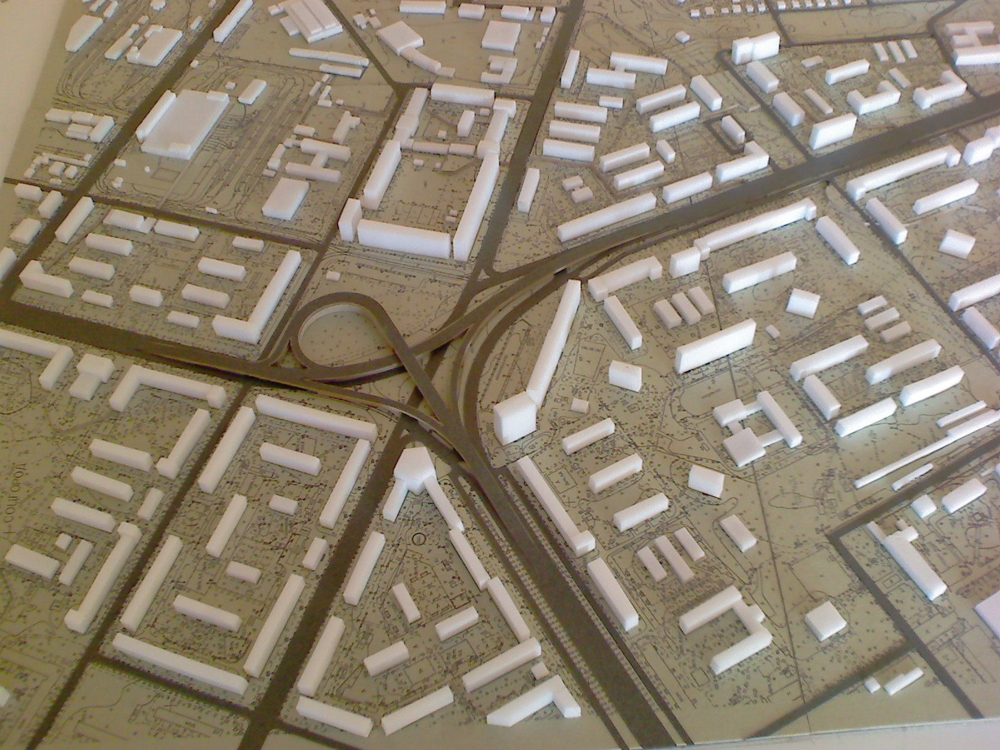
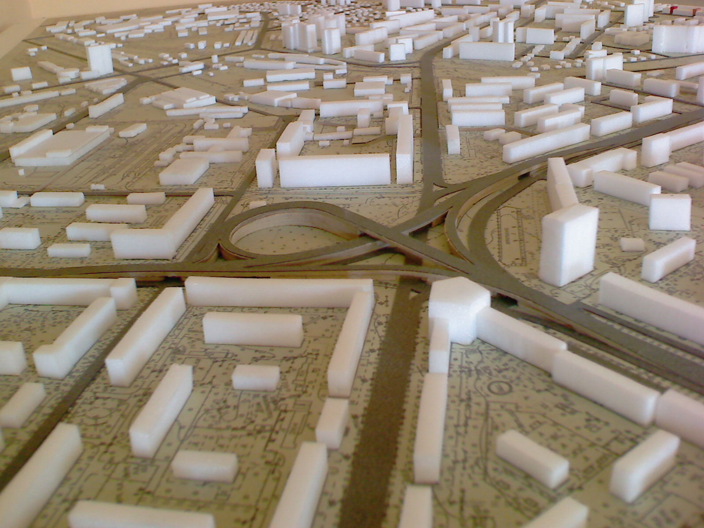
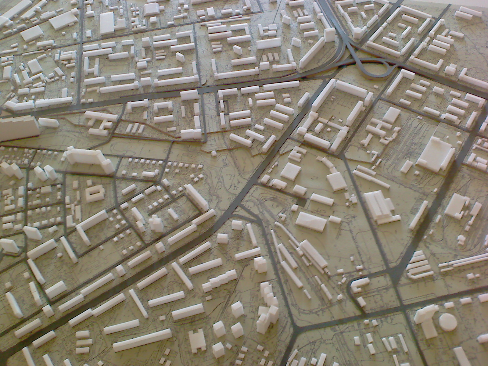
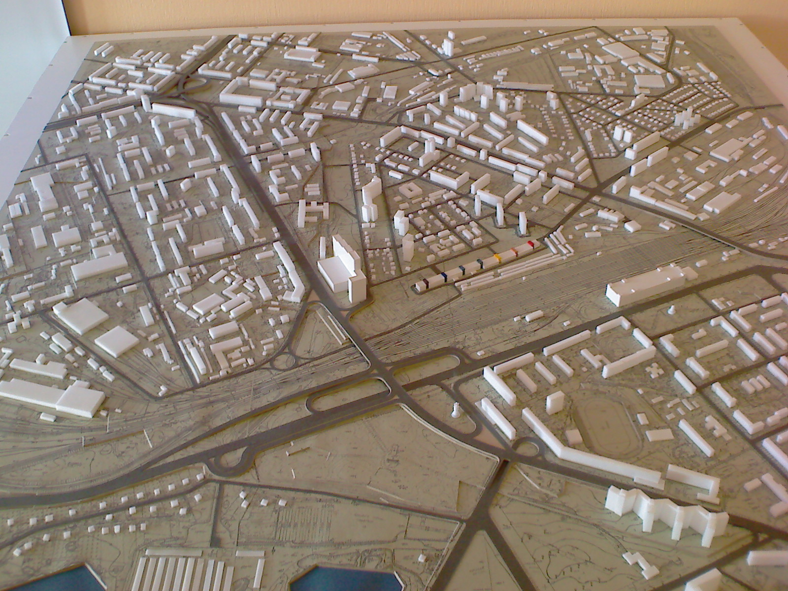
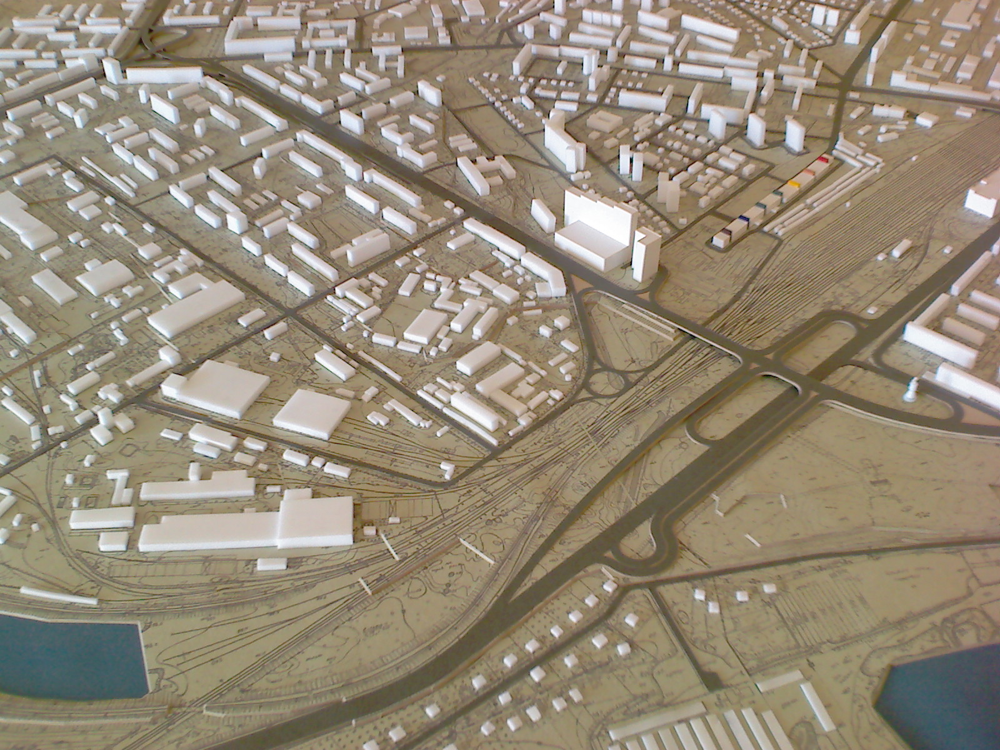
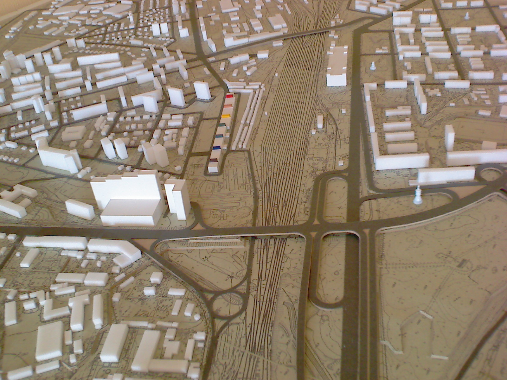
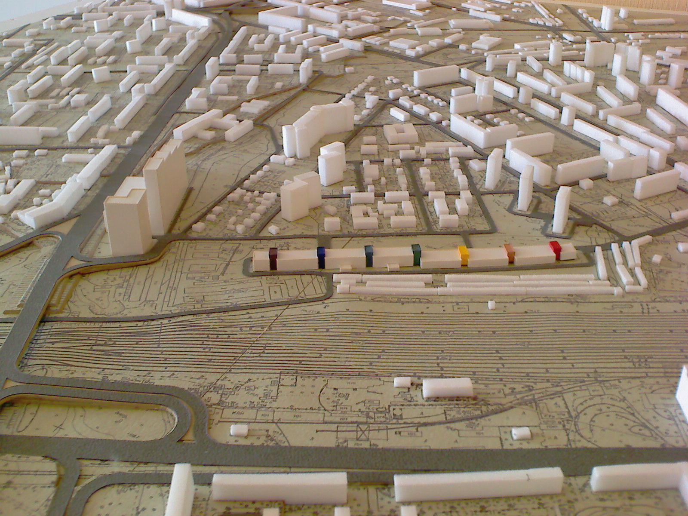

В рамках роботи по створенню макету частини Дарницького району м.Києва, мною були розроблені пропозиції щодо вдосконалення транспортної мережі цього району, а саме: була розроблена трирівнева транспортна розв'язка на Дарницькій площі, дворівнева розв'язка на перетині вул.Привокзальної та Харківського шосе, крім цього запропонованй шляхопровід, який з'єднає вул.Празьку та Бориспільську.
      Проєктування 2009 р.